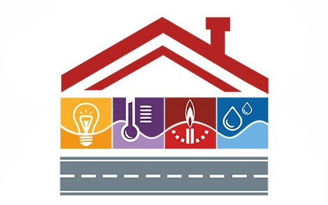
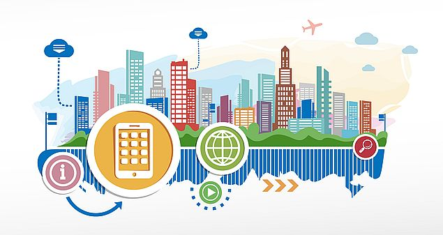
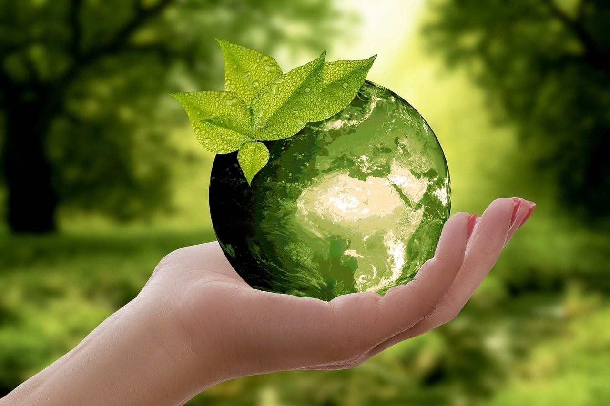

Забезпечення розвитку шкільної та дошкільної освіти в районі,
координація роботи навчальних закладів, підтримка освітніх програм та
ініціатив для дітей та молоді.
Охорона здоров'я
Надання медичних послуг населенню, управління місцевими лікарнями та
поліклініками, профілактика захворювань та організація вакцинації.
Соціальний захист
Підтримка вразливих верств населення, надання соціальної допомоги,
пенсій, субсидій та послуг для сімей, інвалідів та ветеранів.
Культура та спорт
Організація культурних заходів, підтримка музеїв, бібліотек, театрів,
а також розвиток спортивної інфраструктури та проведення змагань.

Житлово-комунальне господарство
Управління житловим фондом, ремонт доріг, водопостачання, опалення,
прибирання територій та вирішення комунальних проблем.
Транспорт та інфраструктура
Розвиток громадського транспорту, будівництво та утримання доріг,
мостів, тротуарів та забезпечення безпеки руху.

Економічний розвиток
Сприяння бізнесу, залучення інвестицій, підтримка підприємництва,
створення робочих місць та розвиток туризму в районі.

Екологія та довкілля
Захист навколишнього середовища, контроль за забрудненням, озеленення
територій, утилізація відходів та екологічна освіта.
Адміністративні послуги
Надання державних послуг громадянам, реєстрація актів цивільного
стану, видача документів, дозвілів та консультації.
Безпека та правопорядок
Координація з правоохоронними органами, забезпечення громадської
безпеки, профілактика злочинності та реагування на надзвичайні
ситуації.